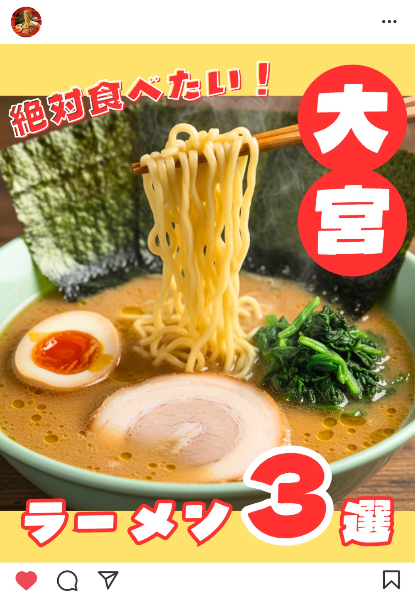
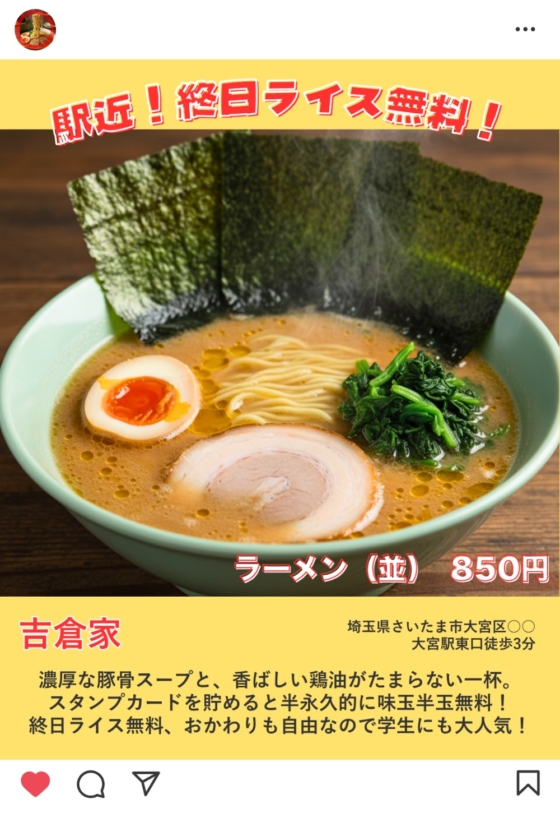
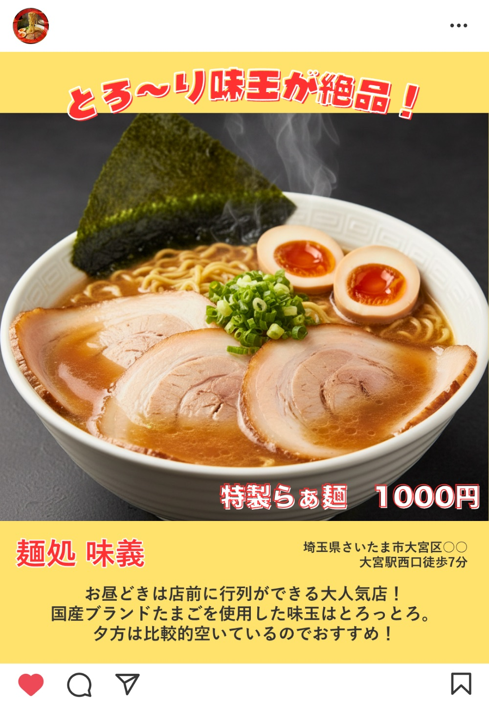
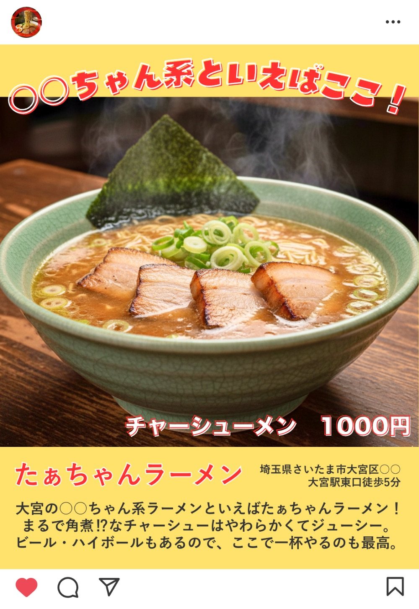
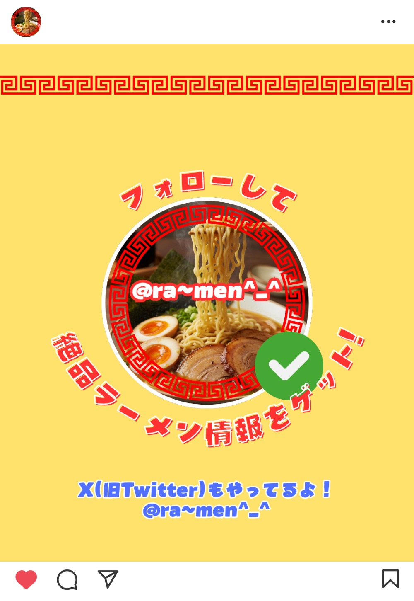
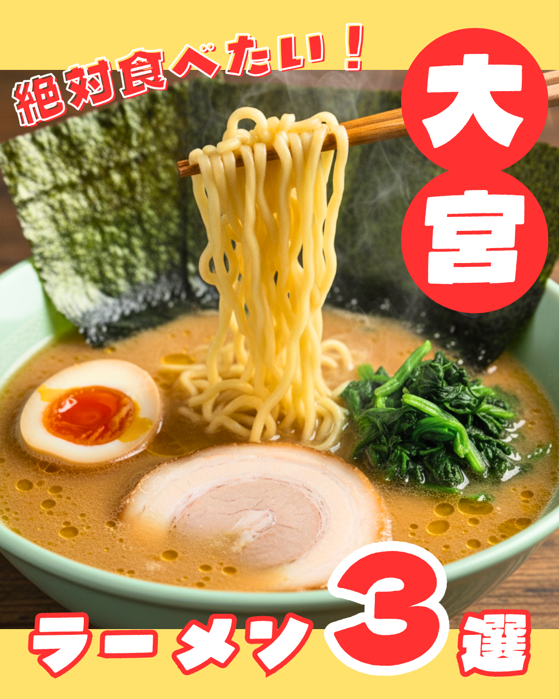
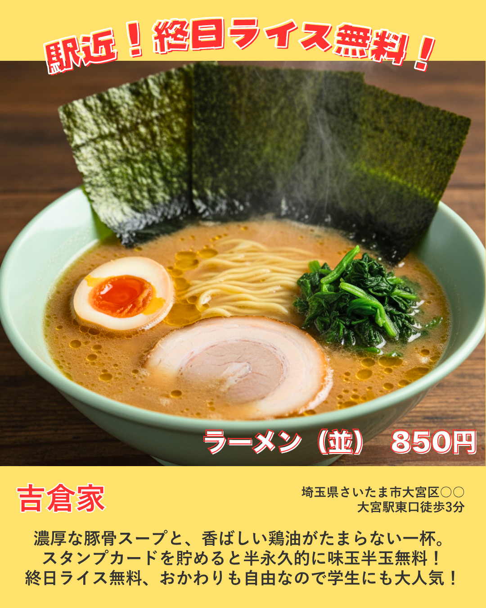
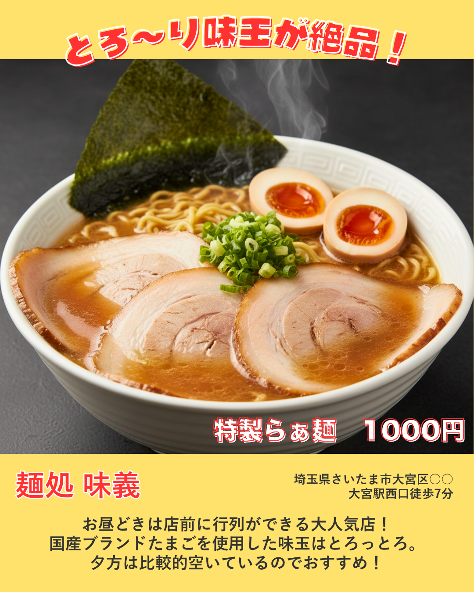
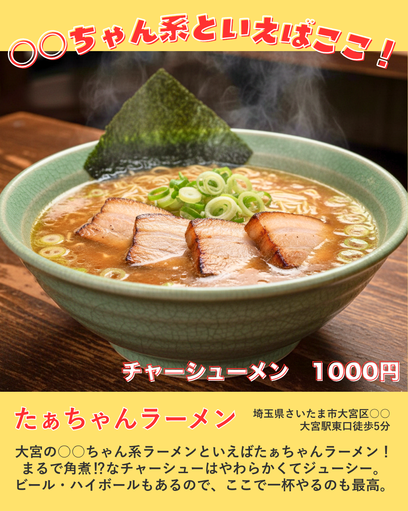

「大宮ラーメン店3選」Instagram投稿
Instagramのまとめ投稿を想定して制作しました。
表紙から裏表紙まで、全5枚で構成しています。
赤や黄色を基調に、食欲をそそるあたたかみのある配色にしました。
写真は生成AIで作成し、明るさや色味を調整。
文字は小さくなりすぎないよう配置し、
ビジュアル重視で目を引くデザインを意識しました。
使用ツール：Canva








